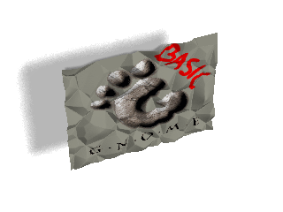

|  |
|
| GB - Basic for GNOME |
What is Gnome Basic?It is an embryonic attempt to provide VB compatible functionality for the GNOME project, particularly with respect to office (VBA) compatibility. It is part of the GNOME desktop environment: a project to create a free, user friendly desktop environment. As every other component of GNOME, Gnome Basic is free software (Some other people like to call this OpenSource software) and it is licensed under the terms of the GNU GPL.Gnome Basic announcements:
Frequently Asked Questions
A total non-issue, gb has been designed from the ground up to be as secure as possible, currently the worst DoS is RAM consumption but this is hardly serious. The security capabilities will be updated as more functionality is introduced. Please send the result of 'cvs -z3 diff -u' to me, and if this is your first patch a brief note saying you have read and agree to the terms of docs/LICENSE. Not really and yes many aspects have been considered others we do not wish to consider yet. If you can see some great pit we are falling into send a patch. The scale of the project is large but this is not scary. If you are an ace VB coder but cannot code in C there is a limited role for you. If you feel you wish to learn C pick an item from the ( expanding ) TODO, implement it, and send me a patch. However, there is room for a competant VB programmer to expand the regression test suite to exercise all the new features that gb implements. All patches welcome. It is my opinion that translating to Python will sacrifice exporting to VB and will in the long run cause serious compatibility problems that are not evidant if you control the interpreter. Futhermore, it is possible to have a Python 'backend' if you so desire but in reality a total waste of time since the interpreter will provide equivilant functionality and the C backend eventualy will provide faster functionality. C is a great language for writing low level functionality in. For example, Python is written in C, GCC's C++ compiler is written in C. C is portable, standardized, lucid and powerful. GB is however written in an object oriented fashion using the Gtk Object model. Essentialy GPL for core and LGPL for runtime. Please read gb/docs/LICENSE before you contribute code, as we reserve the right to switch code between the GPL and the LGPL. ScreenshotsJust to whet your apetite there is a simple number game test in CVS that so far appears to work quite nicely. Here is a photograph of it running.Here is the fruit of the project work, loading a shed load of forms at once. Mailing listsThe Gnome Basic mailing list can be reached at gb@ximian.com. If you want to subscribe to the mailing list please fill out the subscription form. Also if you could please check the Gnome Basic archives for an answer to your question before posting your query it would be greatly appreciated. Please read some advice before sending mail.The project is still in a very pre-alpha stage, hence be kind in your critique. Furthermore any comments of a non technical nature only serve to waste valuable developer time. This list is intended for technical developer discussion, preferably with patches.
Getting Gnome BasicAs with any other software in GNOME, you can fetch the latest development version of Gnome Basic from the GNOME Anonymous CVS and from the GNOME CVS. Just checkout the module "gb".CVS can also be browsed from http://cvs.gnome.org/lxr/source/gb. A tentative preliminary, development release is available at ftp://ftp.gnome.org/pub/GNOME/unstable/sources/gb/ Contractual SupportIf you are interested in contracting support for Gnome Basic, please check the Ximian Inc. web page.All the code written by Ximian is released under the terms of the GNU GPL. If the code extension is general enough your extension might be folded into the main Gnome Basic distribution.
Reporting BugsWe are very interested in grammar / parser bugs, since these usually point to features we havn't thought about yet, and affect the core design. We are less interested in general bug reports, since development is proceeding apace. Also security bugs are of great interest, please report these. Try to make sure that you have the latest version of gb before reporting a bug since many bugs are silently fixed.The standard procedure for bug reporting is detailed at http://bugs.gnome.org/ please ensure that your bug hasn't already been logged by checking the list. There are certain types of bug that we are especially interested in. GB should never die (SEGV) if it does please, please put the effort in to submit a bug report, it will save others lots of grief. Also, if you see any gaping security holes, we would be most interested. DevelopersGnome Basic has mainly been coded by Michael Meeks funded by Ximian Inc, with help from other intrepid hackers that have contributed code, bug fixes and documentation:
|
{kind=link}
{kind=link}